par(col.main = mg, col.lab = mg, cex.main = 1.5, cex.lab = 1.2, las = 1)Assignment 5: Data Visualization
Introduction
This assignment demonstrates data visualization techniques using both base R graphics and ggplot2, applying a professional McKinsey Blue color theme. All visualizations use the built-in mtcars dataset.
Color Palette: - McKinsey Blue: #00567D - McKinsey Light Blue: #0085CA - McKinsey Gray: #5D5D5D
Part 1: Base R Graphics
1a. Histogram
hist(mtcars$mpg,
main = "Distribution of MPG",
xlab = "MPG",
ylab = "Frequency",
col = mb,
border = "white",
breaks = 10)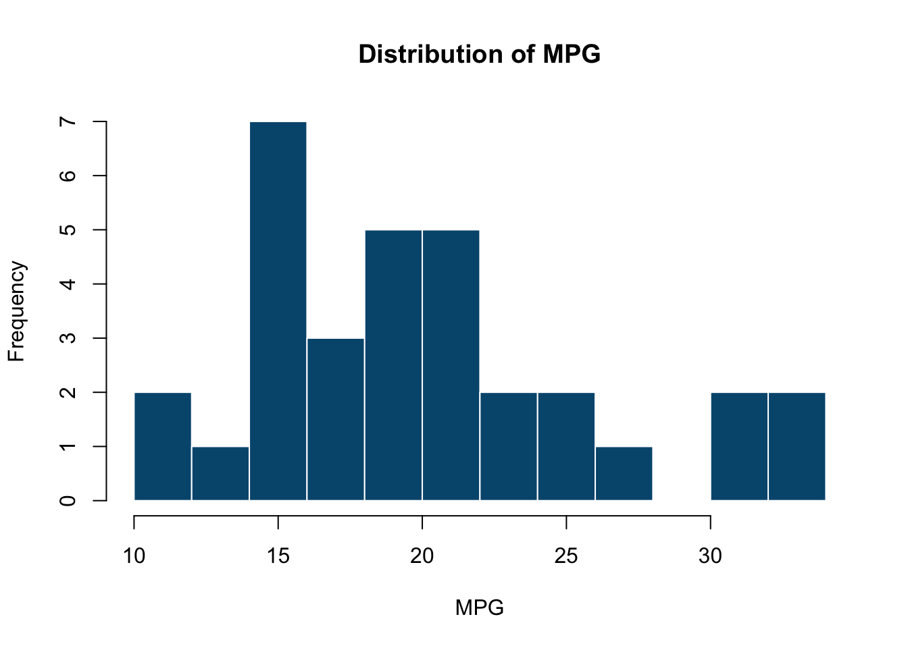
Interpretation: The distribution of miles per gallon shows most vehicles cluster around 15-20 MPG, with a right-skewed distribution indicating some high-efficiency outliers.
1b(i). Barchart - Vertical
barplot(table(mtcars$cyl),
main = "Cars by Cylinder",
xlab = "Cylinders",
ylab = "Count",
col = mb,
border = "white")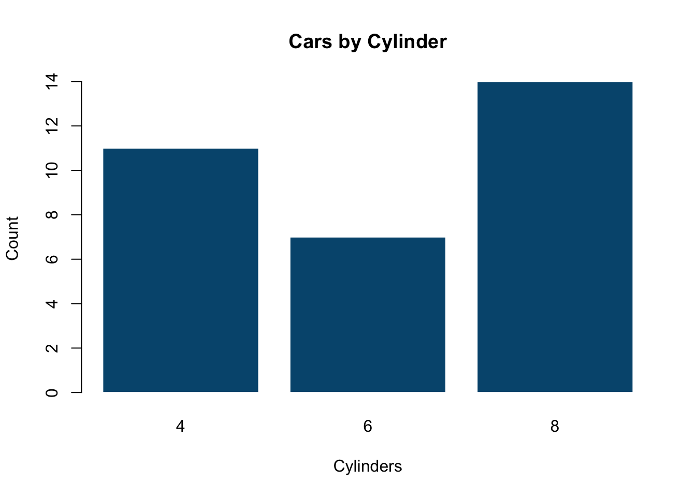
Interpretation: The dataset contains more 8-cylinder vehicles than any other type, followed by 4-cylinder and 6-cylinder vehicles.
1b(ii). Barchart - Horizontal
barplot(tapply(mtcars$mpg, mtcars$cyl, mean),
main = "Avg MPG by Cylinder",
xlab = "Avg MPG",
ylab = "Cylinders",
col = ml,
border = "white",
horiz = TRUE)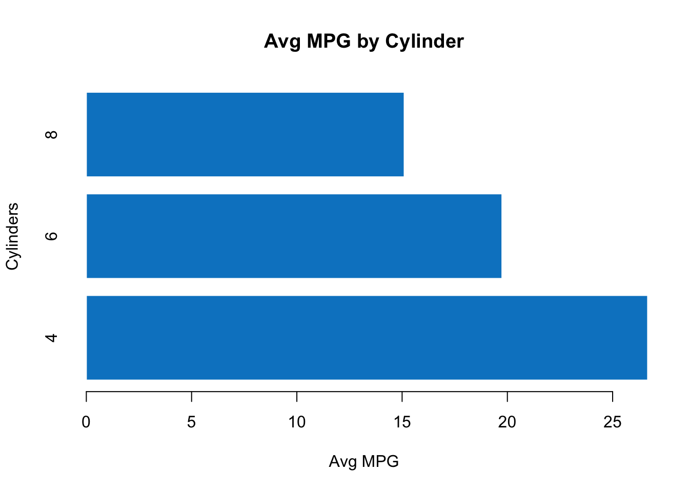
Interpretation: Clear inverse relationship - vehicles with fewer cylinders achieve significantly better fuel efficiency.
1c. Pie Chart
pie(table(mtcars$cyl),
main = "Car Distribution by Cylinder",
col = c(mb, ml, mg),
border = "white")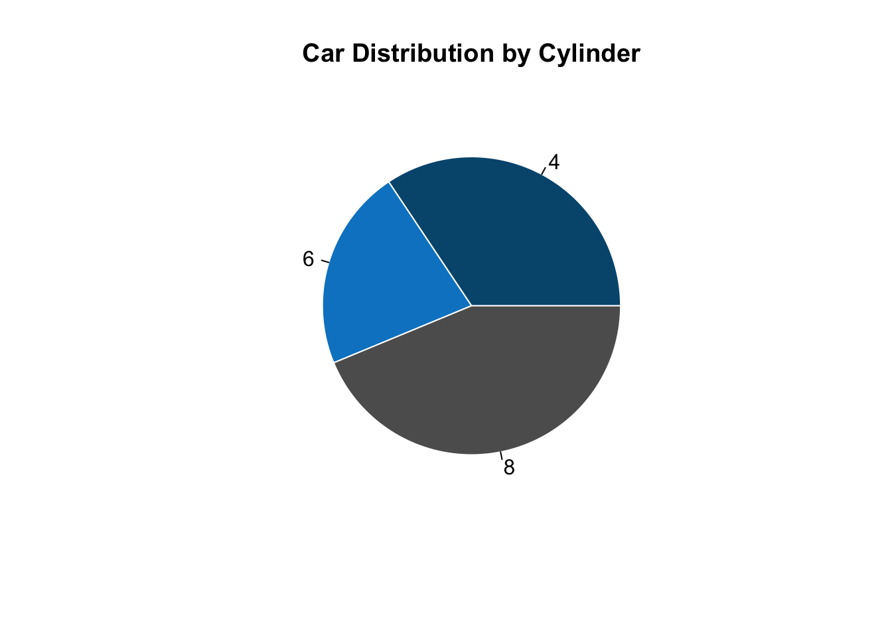
Interpretation: 8-cylinder vehicles represent nearly half of the dataset, reflecting the muscle car era when this data was collected (1970s).
1d. Boxplot
boxplot(hp ~ cyl,
data = mtcars,
main = "Horsepower by Cylinder",
xlab = "Cylinders",
ylab = "HP",
col = mb,
border = mg)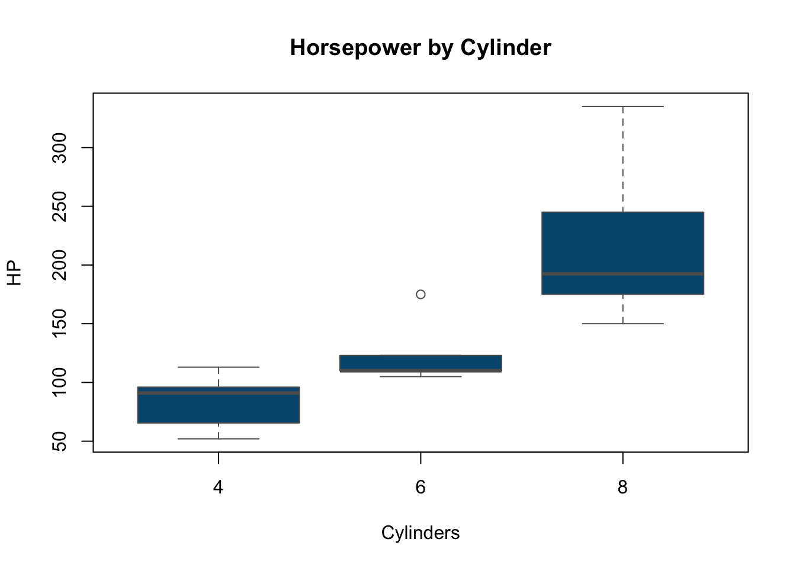
Interpretation: Strong positive correlation between cylinder count and horsepower. 8-cylinder vehicles show the highest median horsepower and greatest variability.
1e. Scatterplot
plot(mtcars$wt, mtcars$mpg,
main = "Weight vs MPG",
xlab = "Weight (1000 lbs)",
ylab = "MPG",
pch = 19,
col = mb,
cex = 1.5)
abline(lm(mpg ~ wt, data = mtcars), col = ml, lwd = 2)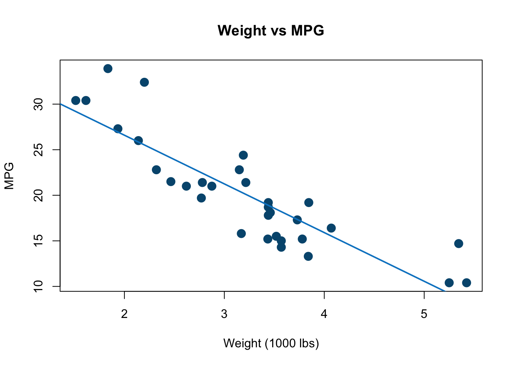
Interpretation: Strong negative correlation (r ≈ -0.87) between vehicle weight and fuel efficiency. Each additional 1000 lbs reduces MPG by approximately 5 units.
Part 2: ggplot2 Graphics
theme_mk <- function() {
theme_minimal() +
theme(
plot.title = element_text(color = mg, size = 16, face = "bold"),
axis.title = element_text(color = mg, size = 12),
axis.text = element_text(color = mg),
panel.grid.major = element_line(color = "lightgray", linetype = "dashed"),
panel.grid.minor = element_blank()
)
}2a. Histogram
ggplot(mtcars, aes(mpg)) +
geom_histogram(bins = 10, fill = mb, color = "white") +
labs(title = "Distribution of MPG", x = "MPG", y = "Frequency") +
theme_mk()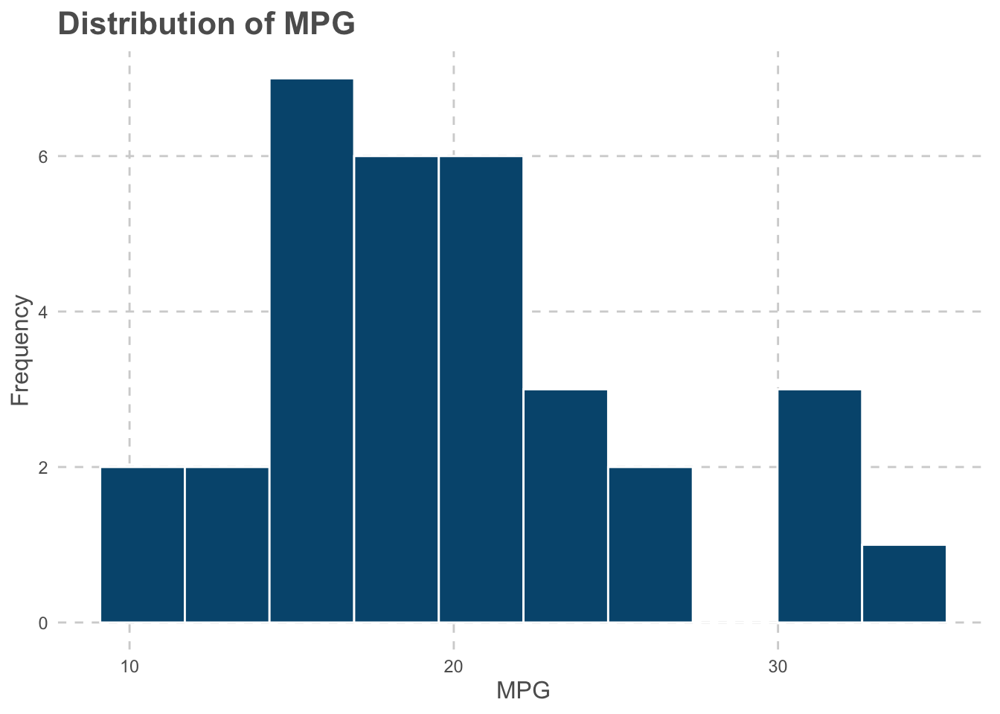
2b(i). Barchart - Vertical
ggplot(mtcars, aes(factor(cyl))) +
geom_bar(fill = mb, color = "white") +
labs(title = "Cars by Cylinder", x = "Cylinders", y = "Count") +
theme_mk()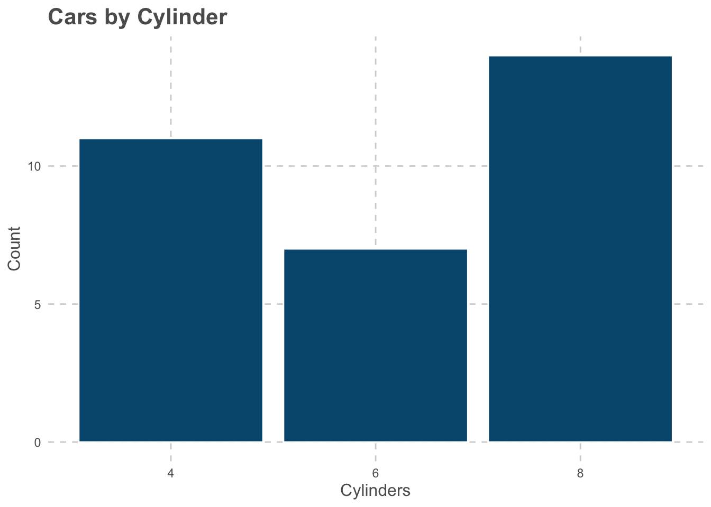
2b(ii). Barchart - Horizontal
ggplot(aggregate(mpg ~ cyl, mtcars, mean), aes(factor(cyl), mpg)) +
geom_bar(stat = "identity", fill = ml, color = "white") +
coord_flip() +
labs(title = "Avg MPG by Cylinder", x = "Cylinders", y = "Avg MPG") +
theme_mk()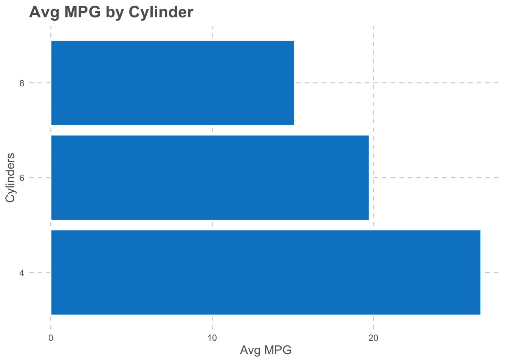
2c. Pie Chart
ggplot(as.data.frame(table(mtcars$cyl)), aes(x = "", y = Freq, fill = Var1)) +
geom_bar(stat = "identity", width = 1, color = "white") +
coord_polar("y") +
scale_fill_manual(values = c(mb, ml, mg)) +
labs(title = "Car Distribution by Cylinder") +
theme_void() +
theme(plot.title = element_text(color = mg, size = 16, face = "bold", hjust = 0.5))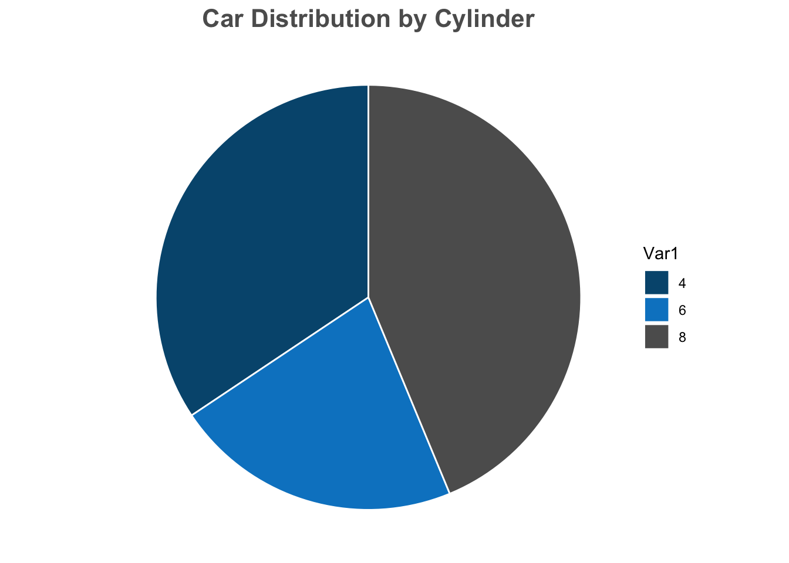
2d. Boxplot
ggplot(mtcars, aes(factor(cyl), hp)) +
geom_boxplot(fill = mb, color = mg) +
labs(title = "Horsepower by Cylinder", x = "Cylinders", y = "HP") +
theme_mk()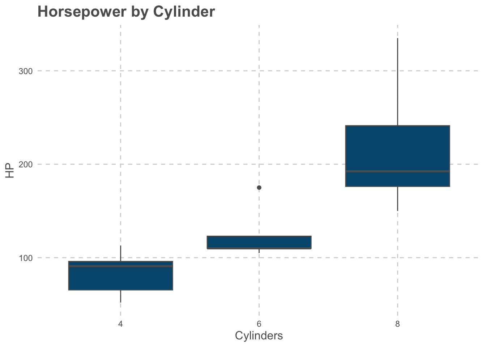
2e. Scatterplot
ggplot(mtcars, aes(wt, mpg)) +
geom_point(color = mb, size = 3) +
geom_smooth(method = "lm", se = FALSE, color = ml, size = 1.2) +
labs(title = "Weight vs MPG", x = "Weight (1000 lbs)", y = "MPG") +
theme_mk()Warning: Using `size` aesthetic for lines was deprecated in ggplot2 3.4.0.
ℹ Please use `linewidth` instead.`geom_smooth()` using formula = 'y ~ x'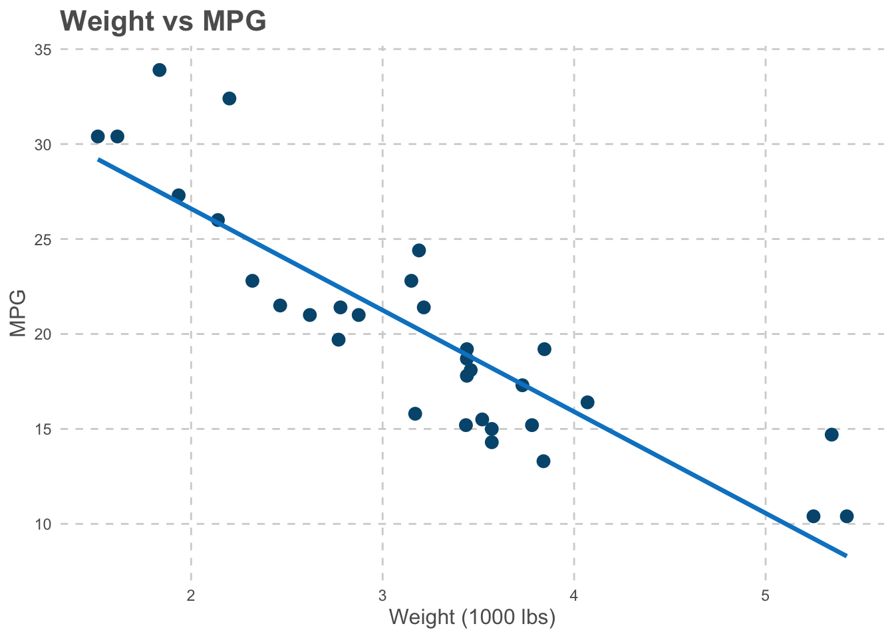
Part 3: File Format Exports
Charts can be exported in multiple formats, each with different characteristics and use cases.
p <- ggplot(mtcars, aes(wt, mpg)) +
geom_point(color = mb, size = 3) +
geom_smooth(method = "lm", se = FALSE, color = ml, size = 1.2) +
labs(title = "Weight vs MPG", x = "Weight (1000 lbs)", y = "MPG") +
theme_mk()
ggsave("scatterplot.pdf", p, width = 8, height = 6)
ggsave("scatterplot.jpg", p, width = 8, height = 6, dpi = 300)
ggsave("scatterplot.svg", p, width = 8, height = 6)
ggsave("scatterplot.tiff", p, width = 8, height = 6, dpi = 300)
ggsave("scatterplot.bmp", p, width = 8, height = 6, dpi = 300)File Format Comparison
PDF (Portable Document Format) - Type: Vector - Best for: Print, documents, presentations - Advantages: Scalable without quality loss, small file size, universal compatibility - File size: Small (~50KB for typical chart)
JPG (Joint Photographic Experts Group) - Type: Raster (compressed) - Best for: Web, email, social media - Advantages: Smallest file size, widely supported - Disadvantages: Lossy compression, quality degrades with editing - File size: Smallest (~30KB)
SVG (Scalable Vector Graphics) - Type: Vector - Best for: Web graphics, interactive visualizations - Advantages: Scalable, editable in browsers, supports animation - File size: Small (~60KB)
TIFF (Tagged Image File Format) - Type: Raster (uncompressed or lossless compression) - Best for: Scientific publishing, archival, high-quality print - Advantages: Highest quality, lossless, supports layers - Disadvantages: Very large file size - File size: Large (~500KB-2MB)
BMP (Bitmap) - Type: Raster (uncompressed) - Best for: Windows applications, basic image editing - Advantages: Simple format, no compression artifacts - Disadvantages: Largest file size, limited features - File size: Largest (~2-3MB)
Recommendation: I will recommend the use of PDF or SVG for presentations and documents, JPG for web publishing, and TIFF for high-quality print publications.
Conclusion
This assignment successfully demonstrated the creation of five fundamental chart types using both base R graphics and ggplot2, with consistent McKinsey Blue styling applied throughout. The professional McKinsey Blue color scheme and consistent styling make these visualizations suitable for business presentations, academic reports, and executive dashboards. The comparison of base R and ggplot2 approaches demonstrates the flexibility and power of R’s visualization ecosystem, with ggplot2 offering more refined control over aesthetics while base R provides quick, efficient plotting capabilities. —